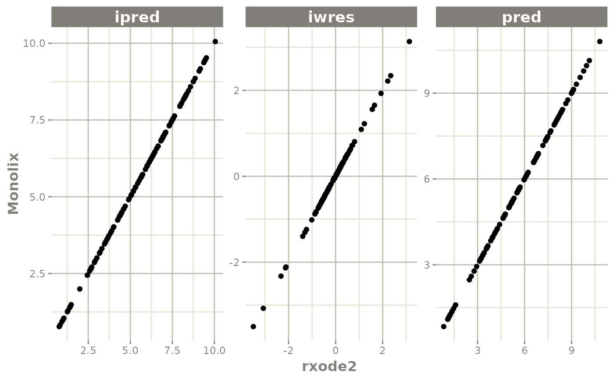
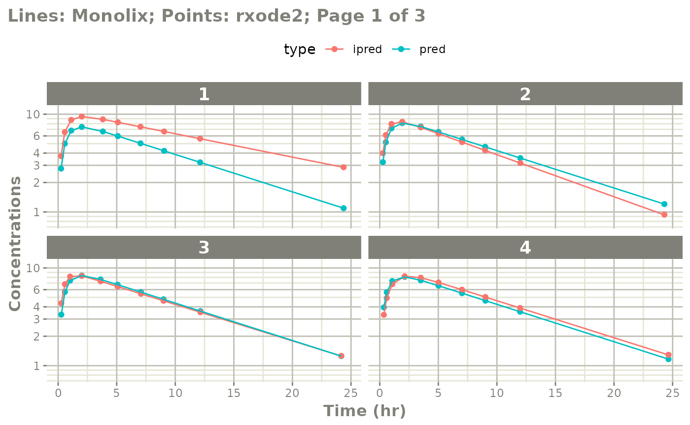
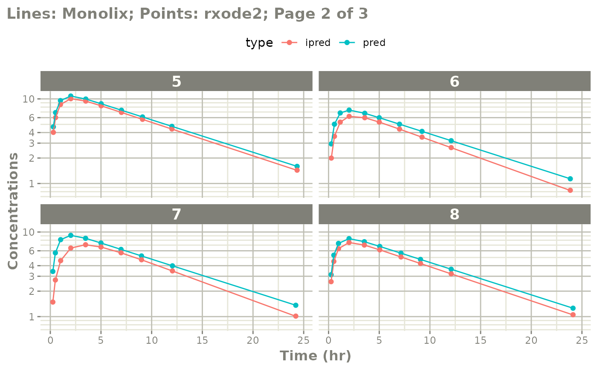
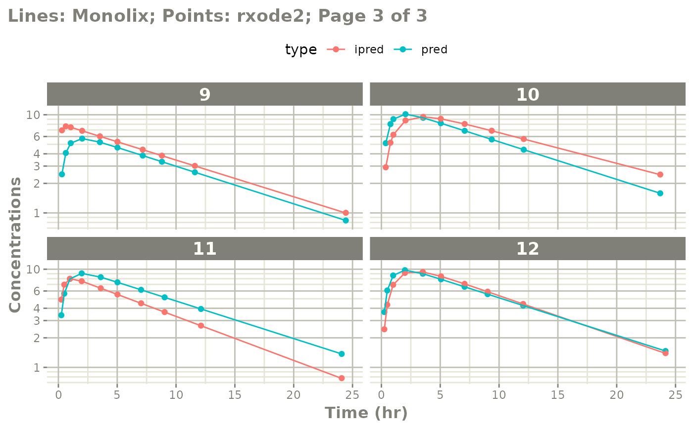

Qualify rxode2 model against Monolix
Source:vignettes/articles/rxode2-validate.Rmd
rxode2-validate.Rmd
library(monolix2rx)
# You use the path to the monolix mlxtran file
# In this case we will us the theophylline project included in monolix2rx
pkgTheo <- system.file("theo/theophylline_project.mlxtran", package="monolix2rx")
# Note you have to setup monolix2rx to use the model library or save
# the model as a separate file
mod <- monolix2rx(pkgTheo)
#> ℹ integrated model file 'oral1_1cpt_kaVCl.txt' into mlxtran object
#> ℹ updating model values to final parameter estimates
#> ℹ done
#> ℹ reading run info (# obs, doses, Monolix Version, etc) from summary.txt
#> ℹ done
#> ℹ reading covariance from FisherInformation/covarianceEstimatesLin.txt
#> ℹ done
#> Warning in .dataRenameFromMlxtran(data, .mlxtran): NAs introduced by coercion
#> ℹ imported monolix and translated to rxode2 compatible data ($monolixData)
#> ℹ imported monolix ETAS (_SAEM) imported to rxode2 compatible data ($etaData)
#> ℹ imported monolix pred/ipred data to compare ($predIpredData)
#> using C compiler: ‘gcc (Ubuntu 13.3.0-6ubuntu2~24.04) 13.3.0’
#> ℹ solving ipred problem
#> ℹ done
#> ℹ solving pred problem
#> ℹ done
print(mod)
#> ── rxode2-based free-form 2-cmt ODE model ──────────────────────────────────────
#> ── Initalization: ──
#> Fixed Effects ($theta):
#> ka_pop V_pop Cl_pop a b
#> 0.42699448 -0.78635157 -3.21457598 0.43327956 0.05425953
#>
#> Omega ($omega):
#> omega_ka omega_V omega_Cl
#> omega_ka 0.4503145 0.00000000 0.00000000
#> omega_V 0.0000000 0.01594701 0.00000000
#> omega_Cl 0.0000000 0.00000000 0.07323701
#>
#> States ($state or $stateDf):
#> Compartment Number Compartment Name
#> 1 1 depot
#> 2 2 central
#> ── μ-referencing ($muRefTable): ──
#> theta eta level
#> 1 ka_pop omega_ka id
#> 2 V_pop omega_V id
#> 3 Cl_pop omega_Cl id
#>
#> ── Model (Normalized Syntax): ──
#> function() {
#> description <- "The administration is extravascular with a first order absorption (rate constant ka).\nThe PK model has one compartment (volume V) and a linear elimination (clearance Cl).\nThis has been modified so that it will run without the model library"
#> dfObs <- 120
#> dfSub <- 12
#> thetaMat <- lotri({
#> ka_pop ~ 0.09785
#> V_pop ~ c(0.00082606, 0.00041937)
#> Cl_pop ~ c(-4.2833e-05, -6.7957e-06, 1.1318e-05)
#> omega_ka ~ c(omega_ka = 0.022259)
#> omega_V ~ c(omega_ka = -7.6443e-05, omega_V = 0.0014578)
#> omega_Cl ~ c(omega_ka = 3.062e-06, omega_V = -1.2912e-05,
#> omega_Cl = 0.0039578)
#> a ~ c(omega_ka = -0.0001227, omega_V = -6.5914e-05, omega_Cl = -0.00041194,
#> a = 0.015333)
#> b ~ c(omega_ka = -1.3886e-05, omega_V = -3.1105e-05,
#> omega_Cl = 5.2805e-05, a = -0.0026458, b = 0.00056232)
#> })
#> validation <- c("ipred relative difference compared to Monolix ipred: 0.04%; 95% percentile: (0%,0.52%); rtol=0.00038",
#> "ipred absolute difference compared to Monolix ipred: 95% percentile: (0.000362, 0.00848); atol=0.00254",
#> "pred relative difference compared to Monolix pred: 0%; 95% percentile: (0%,0%); rtol=6.6e-07",
#> "pred absolute difference compared to Monolix pred: 95% percentile: (1.6e-07, 1.27e-05); atol=3.66e-06",
#> "iwres relative difference compared to Monolix iwres: 0%; 95% percentile: (0.06%,32.22%); rtol=0.0153",
#> "iwres absolute difference compared to Monolix pred: 95% percentile: (0.000403, 0.0138); atol=0.00305")
#> ini({
#> ka_pop <- 0.426994483535611
#> V_pop <- -0.786351566327091
#> Cl_pop <- -3.21457597916301
#> a <- c(0, 0.433279557549051)
#> b <- c(0, 0.0542595276206251)
#> omega_ka ~ 0.450314511978718
#> omega_V ~ 0.0159470121255372
#> omega_Cl ~ 0.0732370098834837
#> })
#> model({
#> cmt(depot)
#> cmt(central)
#> ka <- exp(ka_pop + omega_ka)
#> V <- exp(V_pop + omega_V)
#> Cl <- exp(Cl_pop + omega_Cl)
#> d/dt(depot) <- -ka * depot
#> d/dt(central) <- +ka * depot - Cl/V * central
#> Cc <- central/V
#> CONC <- Cc
#> CONC ~ add(a) + prop(b) + combined1()
#> })
#> }Comparing differences between Monolix and
rxode2
You may wish to see where the differences in predictions are between Monolix and rxode2.
The rxode2 generated outputs are compared with the
Monolix generated outputs for the following items:
Population Predictions: this shows if the model translation is adequate to simulate general trends; This will validate structural model’s population parameters coupled with the model structure.
Individual Predictions: this shows if the model translation is able to replicate the same values over all the subjects within the modeling data-set. This validates the model can reproduce the between subject variability observed in the study.
Individual Weighted Residuals: this is one step further than the individual parameter validation, it couples the individual predictions, the observations and the residual specification to generate the individual weighted residuals. This is included to be consistent with the
nonmem2rxresiduals. However, since this is not needed to manually adjust the residual errors, this simply looks at if the errors were converted correctly.
Note: the only part that is not validated with these
three metrics is the between subject covariance matrix,
omega. We assume this is correct as long as it is read in
correctly.
Comparing numerically
If you want numerical differences, you can also get these from the
modified returned ui object. For the rtol, atol as follows
you have:
mod$iwresAtol
#> 50%
#> 0.003054349
mod$iwresRtol
#> 50%
#> 0.01526897
mod$ipredAtol
#> 50%
#> 0.002537436
mod$ipredRtol
#> 50%
#> 0.0003802867
mod$predAtol
#> 50%
#> 3.657152e-06
mod$predAtol
#> 50%
#> 3.657152e-06You can see they do not exactly match but are very close (I would say
they validate). However you can explore these difference further if you
wish by looking at the ipredCompare and
predCompare datasets:
head(mod$iwresCompare)
#> id time monolixIwres iwres cmt
#> 1 1 0.25 -1.397760000 -1.395682322 CONC
#> 2 1 0.57 0.000121543 0.003040162 CONC
#> 3 1 1.12 1.928970000 1.932039320 CONC
#> 4 1 12.12 0.440294000 0.431149277 CONC
#> 5 1 2.02 0.196493000 0.198287572 CONC
#> 6 1 24.37 0.713742000 0.699508374 CONC
head(mod$ipredCompare)
#> id time monolixIpred ipred cmt
#> 1 1 0.25 3.72839 3.726960 CONC
#> 2 1 0.57 6.56990 6.567599 CONC
#> 3 1 1.12 8.74855 8.746027 CONC
#> 4 1 12.12 5.61508 5.621679 CONC
#> 5 1 2.02 9.47386 9.472175 CONC
#> 6 1 24.37 2.85999 2.868060 CONC
head(mod$predCompare)
#> id time monolixPred cmt pred
#> 1 1 0.25 2.77640 CONC 2.776402
#> 2 1 0.57 4.99610 CONC 4.996088
#> 3 1 1.12 6.80090 CONC 6.800893
#> 4 1 12.12 3.21554 CONC 3.215548
#> 5 1 2.02 7.41259 CONC 7.412585
#> 6 1 24.37 1.09158 CONC 1.091582In these cases you can see that Monolix seems to round the values to
5 digits, while rxode2 keeps everything since it is solved
in R directly.
Note this is the observation data only that is compared. Dosing predictions are excluded from these comparisons.
You can also explore the Monolix translated input dataset that was
used to make the validation predictions (dosing and observations) by the
$monolixData item:
head(mod$monolixData) # with nlme loaded you can also use getData(mod)
#> id amt time dv WEIGHT SEX cmt admd
#> 1 1 4.02 0.00 NA 79.6 NA <NA> NA
#> 2 1 NA 0.25 2.84 79.6 NA <NA> NA
#> 3 1 NA 0.57 6.57 79.6 NA <NA> NA
#> 4 1 NA 1.12 10.50 79.6 NA <NA> NA
#> 5 1 NA 2.02 9.66 79.6 NA <NA> NA
#> 6 1 NA 3.82 8.58 79.6 NA <NA> NAComparing visually
The easiest way to visually compare the differences is by the plot method:
plot(mod) # for general plot
# you can also see individual comparisons
plot(mod, log="y", ncol=2, nrow=2,
xlab="Time (hr)", ylab="Concentrations",
page=1)
# If you want all pages you could use:
#
plot(mod, log="y", ncol=2, nrow=2,
xlab="Time (hr)", ylab="Concentrations",
page=TRUE)
Notes on validation
The validation of the model uses the best data available for Monolix estimates. This is:
-
thetaor population parameters -
etaor individual parameters
The omega and sigma matrices are captured.
When the nlmixr2 model is fully qualified, the IWRES
validation ensures the residual errors are specified correctly.
Otherwise omega and sigma values do not
contribute to the validation. Also the overall covariance is captured,
but not used in the validation.